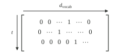
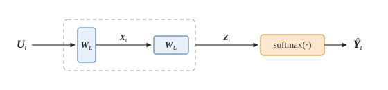
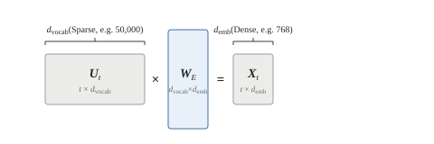
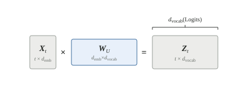
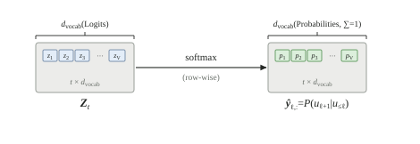
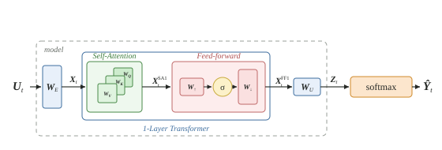

Why \(\K\V\) Cache and Not \(\Q\K\V\) Cache?
In autoregressive token generation, a model's goal is to produce a sequence of tokens for a given set of input tokens. This works by:
- generating a single token from the input (e.g., prompt from a user);
- appending the generated token to the original input;
- repeating the process in step (i) with the expanded input from step (ii);
- continuing the process until a complete sequence of tokens is produced.
The process of propagating the entire input repeatedly for every subsequent token generation is extremely wasteful. Suppose there are \(T_\text{out}\) output tokens in a sequence. Under a naive approach, the input tokens propagate through the transformer \(T_{\text{out}}\) times, while previously generated tokens propagate anywhere between \(1\) and \(T_{\text{out}}-1\) times.
The core insight that allows us to avoid this redundancy is twofold:
- Significant parts of the transformer operate on individual tokens (or representations of a token, e.g., token embeddings) independently.
- After a certain number of internal processing steps, the latent variable within the transformer corresponding to the last token contains all the necessary information to predict the next token.
Using a 1-layer transformer with a single-head attention block, you will see that caching the key and value tensors, \(\K\) and \(\V\), from the attention mechanism is enough to avoid doing a forward pass on an ever-expanding set of input tokens. After an initial forward pass with the input tokens, we only need to propagate the latest generated output token through the transformer for subsequent sequence generations.
Mathematical Setup
Let \(\U_{\text{orig}, t}\) be a tensor containing the sequence of input tokens, with \(\U_{\text{id}, t}\) the corresponding token ids, where \(t\) denotes the context length of the input sequence.
Instead of starting the model with the token ID representation, \(\U_{\text{id}, t}\), we will use the one-hot encoding of the input as our starting point: \(\U_t \in \mathbb{R}^{t \times d_{\text{vocab}}}\), where \(t\) is the current context length, \(T_{\max}\) is the maximum context length, and \(d_{\text{vocab}}\) is the vocabulary size.

Note on Vector Orientation: Throughout this tutorial, to make the matrix multiplications intuitive, all individual token vectors are treated as row vectors. For example, a single one-hot token is a \(1 \times d_{\text{vocab}}\) row vector. For the sake of clarity, we will ignore the Batch dimension for now (we will reintroduce it at the end).
The model is set up as follows: the forward pass takes an input of dimension \(t \times d_{\text{vocab}}\) and produces a prediction tensor \(\hat{\Y}_t\) of the same shape, \(t \times d_{\text{vocab}}\). See the example in Fig. 1, where the input,
\[ \U_t = \begin{bmatrix} \rowbar & \us_1 & \rowbar \\ \rowbar & \us_2 & \rowbar \\ & \vdots & \\ \rowbar & \us_t & \rowbar \end{bmatrix}_{t \times d_{\text{vocab}}}, \]produces a prediction tensor of the exact same shape:
\[ \hat{\Y}_t = \begin{bmatrix} \rowbar & \hat{\ys}_1 & \rowbar \\ \rowbar & \hat{\ys}_2 & \rowbar \\ & \vdots & \\ \rowbar & \hat{\ys}_t & \rowbar \end{bmatrix}_{t \times d_{\text{vocab}}} \]Because we are predicting the next token, the model is trained so that the probability distribution \(\hat{\Y}_t\) matches the actual next tokens. Therefore, our target (the teaching signal) for \(\hat{\Y}_t\) is simply the input sequence, \(\U_t\) shifted one step into the future. To avoid overloading \(\U_{t+1}\), we denote this shifted target by \(\U^{\text{tgt}}_t\):
\[ \U^{\text{tgt}}_t = \begin{bmatrix} \rowbar & \us_2 & \rowbar \\ \rowbar & \us_3 & \rowbar \\ & \vdots & \\ \rowbar & \us_{t+1} & \rowbar \end{bmatrix}_{t \times d_{\text{vocab}}} \]Each row in the final prediction matrix represents the probability distribution over the vocabulary for the next token: \(\hat{\Y}_{\ell,:} = \hat{\ys}_{\ell} = P(\us_{\ell+1} \mid \us_{\leq \ell})\) for \(\ell \in 1, \dots, t\).
Before we get tangled in self-attention, let's look at the absolute simplest setup: a “0-Layer Transformer”, see Figure 1. This is essentially a Bigram model. It does no mixing between tokens. Its only job is to map a sparse one-hot input to a dense embedding, and then immediately blow it back up into vocabulary probabilities.

The Embedding Step (Reducing Columns)
Our input matrix \(\U_t\) has dimensions \(t \times d_{\text{vocab}}\). Each row is a token, represented as a sparse vector filled with zeros and a single \(1\).
\[ \us_1 = \begin{bmatrix} 0 & 0 & \dots & 1 & \dots & 0 \end{bmatrix} \]When we multiply \(\U_t\) by the embedding matrix \(\W_E \in \mathbb{R}^{d_{\text{vocab}} \times d_{\text{emb}}}\), the math effectively “plucks out” a specific row from \(\W_E\). Notice how this operation keeps the number of rows (sequence length \(t\)) exactly the same, but drastically reduces the number of columns (from \(d_{\text{vocab}}\) down to \(d_{\text{emb}}\)).

The Unembedding Step (Expanding Columns)
To get back to probabilities, we need to convert our dense representations \(\X_t\) back into vocabulary dimensions. We do this by multiplying by the unembedding matrix \(\W_U \in \mathbb{R}^{d_{\text{emb}} \times d_{\text{vocab}}}\). This expands the columns back out to match the vocabulary size, producing logits \(\Z_t\).

The Softmax Step (Row-wise Probabilities)
Finally, a softmax function is applied to the logit matrix \(\Z_t\) to squash the unbounded numbers into valid probabilities, yielding our final prediction tensor \(\hat{\Y}_t\).
Crucially, this softmax operates strictly on a row-by-row basis. The operation looks exclusively at the \(d_{\text{vocab}}\) discrete logits for a single token row and normalizes them so they sum to exactly 1.

Because there is no attention mechanism here, the probability distribution \(P(\us_{t+1} \mid \us_{\leq t}) = P(\us_{t+1} \mid \us_{t})\), depends exclusively on token \(\us_t\). Tokens \(1 \dots t-1\) do absolutely nothing to influence the prediction of token \(t+1\).
1-Layer Transformer
Next, we step up to a single-head 1-layer Transformer. The full forward pass looks like this:
\[ \U_t \xrightarrow{} \left[ \W_E \xrightarrow{} \underbrace{\textsf{Self-Attn}(\cdot) \xrightarrow{} \textsf{FF}(\cdot)}_{\text{1-Layer Transformer}} \xrightarrow{} \W_U \right] \xrightarrow{} \textsf{softmax}(\cdot) \xrightarrow{} \hat{\Y}_t \]See Fig. 5.
Single-Headed Causal Self-Attention
The standard causal self-attention formula is given by
\begin{align} \textsf{Self-Attn}(\X_t) = {} & \textsf{softmax}\left(\frac{\Q_t \K^\T_t }{\sqrt{d_\text{head}}} + \M \right)\V_t \label{eq:self-attn} \end{align}where the query, key, and value matrices are respectively given by \(\Q_t = \X_t \W_Q\), \(\K_t = \X_t \W_K\), and \(\V_t = \X_t \W_V\).
The Q/K/V projections themselves are row-wise linear maps. For each position \(\ell\),
\[ \qs_{\ell} = \xs_{\ell}\W_Q, \qquad \ks_{\ell} = \xs_{\ell}\W_K, \qquad \vs_{\ell} = \xs_{\ell}\W_V. \]So \(\ks_{\ell}\) depends only on \(\xs_{\ell}\) and \(\W_K\), not on any other token row. This row-wise nature of the projections is the local reason an old key or value does not change merely because a new token is appended.
For the simplified single-head case in this tutorial, we set \(d_{\text{head}} = d_{\text{emb}}\) and omit the attention output projection. More generally, the learnable QKV weight matrices have shape1
\[ \W_Q, \W_K, \W_V \in \mathbb{R}^{d_{\text{emb}} \times d_{\text{head}}}. \]In the single-head simplification used here, this reduces to \(d_{\text{emb}} \times d_{\text{emb}}\).
The matrix \(\M \in \mathbb{R}^{t \times t}\) is a constant (non-learnable) additive mask to the scaled dot-product attention, which ensures tokens can only attend to previous tokens:
\[ \M_{ij} = \begin{cases} 0 & \text{if } i \ge j \\ -\infty & \text{if } i < j \end{cases} \]That is, the matrix \(\M\) has zeros on and below the diagonal, and \(-\infty\) elsewhere:
\[ \M = \begin{bmatrix} 0 & -\infty & -\infty & \cdots & -\infty \\ 0 & 0 & -\infty & \cdots & -\infty \\ \vdots & \vdots & \ddots & \ddots & \vdots \\ 0 & 0 & 0 & \cdots & 0 \end{bmatrix} \]We are generating tokens autoregressively, meaning the model isn't allowed to peek into the future. By adding \(-\infty\) to the upper triangular elements before the softmax, those positions become \(e^{-\infty} = 0\) after the softmax. This completely zeros out the attention weights for future tokens. Token 3 can only attend to tokens 1, 2, and 3. The Self-Attention equation in \(\eqref{eq:self-attn}\) is slightly different because the causal mask is represented using an addition of a constant matrix \(\M\). I represent the causal mask as an additive constant matrix \(\M\) to keep the notation close to the standard scaled dot-product attention formula while preserving the logic of the procedure.
Feed forward
Next, the feed-forward layer is defined as:
\begin{align} \textsf{FF}\left(\X_t \right) = {} & \sigma\left(\X_t\W_{\uparrow} + \bs_{\uparrow} \right)\W_{\downarrow} + \bs_{\downarrow} \end{align}where \(\sigma\) is an element-wise non-linearity, such as \(\textsf{ReLU}(\cdot)\).

The first thing to notice is that not every operation in the Transformer actually mixes information across tokens. A surprising amount of the model works row-by-row (i.e. on a per-token basis).
Let's list the operations that work on a strictly token-by-token basis:
- Embedding step via \(\W_E\)
- Unembedding step via \(\W_U\)
- Softmax producing the probability tensor per token
- \(\textsf{FF}\) (Feed-Forward) Layer
- LayerNorm and Residuals
- Positional encodings, once added to each token position
None of the items above need to look sideways at the other tokens. They don't ask: “what came before me?” or “what came after me?” They just take one token representation, do some computation on that row, and move on.
The Attention mechanism is the only place where information across tokens is mixed.
During training, we usually care about every row of the output:
\[ \hat{\Y}_t = \begin{bmatrix} \rowbar & \hat{\ys}_1 & \rowbar \\ \rowbar & \hat{\ys}_2 & \rowbar \\ & \vdots & \\ \rowbar & \hat{\ys}_t & \rowbar \end{bmatrix} \]where each row tries to predict the next token:
\[ \hat{\ys}_{\ell} = P(\us_{\ell+1} \mid \us_{\leq \ell}). \]But during autoregressive generation, after we have processed the prompt, we only care about the last row:
\[ \hat{\ys}_{t} = P(\us_{t+1} \mid \us_{\leq t}). \]This last row is what we use to sample the next token. Recall, the statement in the introduction of how a sequence of tokens is generated (naively):
- Start with the prompt tokens \(\us_1, \dots, \us_t\).
- Do one full forward pass through the model.
- Use the final row \(\hat{\ys}_t\) to predict/sample the next token \(\hat{\us}_{t+1}\).
- Append \(\hat{\us}_{t+1}\) back into the input sequence, forming \(\U_{t+1}\).
- Now try to predict \(\us_{t+2}\).
This last step is where the caching explanation actually starts to matter.
The First Full Forward Pass
Suppose our current input is
\[ \U_t = \begin{bmatrix} \rowbar & \us_1 & \rowbar \\ \rowbar & \us_2 & \rowbar \\ & \vdots & \\ \rowbar & \us_t & \rowbar \end{bmatrix}. \]We run the full model once:
\[ \U_t \xrightarrow{\textsf{model}} \hat{\Y}_t. \]The final row gives us:
\[ \hat{\ys}_t = P(\us_{t+1} \mid \us_{\leq t}). \]Then we sample or choose the next token:
\[ \hat{\us}_{t+1} \sim \hat{\ys}_t. \]At this point, we append the newly generated token to the old sequence:
\[ \U_{t+1} = \begin{bmatrix} \rowbar & \us_1 & \rowbar \\ \rowbar & \us_2 & \rowbar \\ & \vdots & \\ \rowbar & \us_t & \rowbar \\ \rowbar & \hat{\us}_{t+1} & \rowbar \end{bmatrix}. \]Naively, to predict the next token after that, \(\us_{t+2}\), we would run the whole expanded sequence through the model again:
\[ \U_{t+1} \xrightarrow{\textsf{model}} \hat{\Y}_{t+1}. \]Then we would take the final row:
\[ \hat{\ys}_{t+1} = P(\us_{t+2} \mid \us_{\leq t+1}). \]But this is where things get wasteful. The tokens \(\us_1, \dots, \us_t\) have already gone through the model. Running a forward pass on the full input now is going to repeat a lot of the calculations.
That is the redundancy the \(\K\V\) cache removes.
Working Backwards: Why \(\K\V\) Cache?
Now we get to the actual reason the \(\K\V\) cache works.
We just predicted \(\hat{\us}_{t+1}\), appended it, and now want the next row:
\[ \hat{\ys}_{t+1} = P(\us_{t+2} \mid \us_{\leq t+1}). \]Naively, we would pass the whole expanded sequence \(\U_{t+1}\) through the model again. But let's work backwards from the output and see what we actually need. Refer to Fig. 5 as we do this exercise.
The final probability vector is produced by softmax and unembedding:
\[ \hat{\ys}_{t+1} = \textsf{softmax}\left( \xs^{\text{FF}_1}_{t+1}\W_U \right). \]The softmax is row-wise. The unembedding is also row-wise. So to predict \(\us_{t+2}\), we only need the final row:
\[ \xs^{\text{FF}_1}_{t+1}. \]Now step one layer backwards.
The feed-forward layer is also row-wise:
\[ \xs^{\text{FF}_1}_{t+1} = \textsf{FF}\left(\xs^{\text{SA}_1}_{t+1}\right) = \sigma\left(\xs^{\text{SA}_1}_{t+1}\W_{\uparrow} + \bs_{\uparrow}\right)\W_{\downarrow} + \bs_{\downarrow}. \]So again, we do not need the feed-forward outputs for every previous token. We only need:
\[ \xs^{\text{SA}_1}_{t+1}. \]Now we get to the Attention block. Everything before this was row-by-row. But attention is different. Attention is the place where the newest token looks backwards and mixes information from the previous tokens.
So now we need to zoom into the attention calculation for the newest token.
From the original self-attention equation in \(\eqref{eq:self-attn}\),
\[ \textsf{Self-Attn}(\X_t) = \textsf{softmax}\left( \frac{\Q_t\K_t^\T}{\sqrt{d_\text{head}}} + \M \right)\V_t, \]the attention output for the newest token at position \(t+1\) is:
\[ \xs^{\text{SA}_1}_{t+1} = \sum_{\ell=1}^{t+1} \alpha_{t+1,\ell}\vs_{\ell}, \]where
\[ \alpha_{t+1,\ell} = \frac{ \exp\left( \frac{\qs_{t+1}\ks^\T_{\ell}}{\sqrt{d_\text{head}}} \right) }{ \sum^{t+1}_{j=1} \exp\left( \frac{\qs_{t+1}\ks^\T_{j}}{\sqrt{d_\text{head}}} \right) }. \]So written out more explicitly ignoring the \(\sqrt{d_{\text{head}}}\):
\begin{align} \xs^{\text{SA}_1}_{t+1} = \left( \frac{ \exp\left( \qs_{t+1}\ks^\T_{1} \right) }{ \sum^{t+1}_{j=1} \exp\left( \qs_{t+1}\ks^\T_{j} \right) } \right)\vs_1 + \dots + \left( \frac{ \exp\left( \qs_{t+1}\ks^\T_{t+1} \right) }{ \sum^{t+1}_{j=1} \exp\left( \qs_{t+1}\ks^\T_{j} \right) } \right)\vs_{t+1}. \label{eq:expanded-attn} \end{align}Now you might ask: where did the mask \(\M\) go?
In the full matrix version, \(\M\) is needed because we compute attention for every token position at once. So token \(3\) would technically have columns for token \(4\), token \(5\), and so on. The causal mask adds \(-\infty\) to those illegal future positions, so after softmax their attention weights become zero.
But here, we are writing the scalar attention equation only for the newest token at position \(t+1\) during generation.
At this point, there are no future tokens inside the cache. The available keys and values are only:
\[ 1,2,\dots,t+1. \]So the summation already runs only over legal positions:
\[ \ell = 1,\dots,t+1. \]That is why \(\M\) does not explicitly appear in the expanded equation. It has not magically disappeared. Its job has already been baked into the range of the summation. We are only summing over tokens the newest token is allowed to attend to.
So, according to our attention equation in \(\eqref{eq:expanded-attn}\), to compute \(\xs^{\text{SA}_1}_{t+1}\), we need:
\[ \begin{aligned} \qs_{t+1} &= \xs_{t+1}\W_Q, \\ \ks_{\ell} &= \xs_{\ell}\W_K \quad \text{for } \ell = 1,\dots,t+1, \\ \vs_{\ell} &= \xs_{\ell}\W_V \quad \text{for } \ell = 1,\dots,t+1. \end{aligned} \]This is the whole punchline. For the newest token, we need one new query:
\[ \qs_{t+1}. \]But we need all keys and values from the past:
\[ \ks_1,\dots,\ks_t, \qquad \vs_1,\dots,\vs_t. \]Those old keys and values were already computed during the first full forward pass. They do not change when we append a new token. In this 1-layer setting, this follows directly from the row-wise Q/K/V projections. For example:
\[ \ks_3 = \xs_3\W_K \]depends only on the row \(\xs_3\) and the weight matrix \(\W_K\), so it is still the same vector after token \(t+1\) is appended. Similarly,
\[ \vs_3 = \xs_3\W_V \]depends only on \(\xs_3\) and \(\W_V\), so it is still the same vector.
So recomputing them is pure waste.
Instead, we save them.
That saved memory is the \(\K\V\) cache:
\[ \K_{\text{cache},t} = \begin{bmatrix} \rowbar & \ks_1 & \rowbar \\ \rowbar & \ks_2 & \rowbar \\ & \vdots & \\ \rowbar & \ks_t & \rowbar \end{bmatrix}, \qquad \V_{\text{cache},t} = \begin{bmatrix} \rowbar & \vs_1 & \rowbar \\ \rowbar & \vs_2 & \rowbar \\ & \vdots & \\ \rowbar & \vs_t & \rowbar \end{bmatrix}. \]When the new token \(\hat{\us}_{t+1}\) comes in, we only compute:
\[ \qs_{t+1}, \qquad \ks_{t+1}, \qquad \vs_{t+1}. \]Then we append only the new key and value:
\[ \K_{\text{cache},t+1} = \begin{bmatrix} \rowbar & \K_{\text{cache},t} & \rowbar \\ \rowbar & \ks_{t+1} & \rowbar \end{bmatrix}, \qquad \V_{\text{cache},t+1} = \begin{bmatrix} \rowbar & \V_{\text{cache},t} & \rowbar \\ \rowbar & \vs_{t+1} & \rowbar \end{bmatrix}. \]Then the newest query \(\qs_{t+1}\) attends against the cached keys and pulls from the cached values:
\[ \qs_{t+1} \quad \text{attends to} \quad \K_{\text{cache},t+1} \quad \text{and reads from} \quad \V_{\text{cache},t+1}. \]That gives us \(\xs^{\text{SA}_1}_{t+1}\).
Then the rest of the pipeline is back to being on a per-token basis again:
\[ \xs^{\text{SA}_1}_{t+1} \rightarrow \xs^{\text{FF}_1}_{t+1} \rightarrow \hat{\ys}_{t+1} \rightarrow \hat{\us}_{t+2}. \]So the clean picture is:
To predict \(\us_{t+2}\), we only do a forward pass on \(\hat{\us}_{t+1}\), without explicitly reprocessing the previous context, \(\U_t\). The previous context is still used, but it is accessed through the cached keys and values.
Multi-layer Transformer Nuance
The derivation above used a 1-layer transformer, so each old key is simply \(\ks_i = \xs_i\W_K\) and each old value is \(\vs_i = \xs_i\W_V\). In a real transformer with many layers, the same idea applies, but the cache is kept separately for each layer. At layer \(r\), the cached keys and values are computed from that layer's input activations, not directly from the raw token embeddings.
The causal mask is what makes this safe. Under causal attention, the hidden state at position \(i\) can depend only on positions \(1,\dots,i\). Appending a future token at position \(t+1\) cannot change the already-computed hidden states for positions \(1,\dots,t\). Therefore the old layer-wise keys and values remain valid and do not need to be recomputed.
So, in a multi-layer transformer, “the \(\K\V\) cache” really means a collection of caches:
\[ \{(\K^{(r)}_{\text{cache}}, \V^{(r)}_{\text{cache}})\}_{r=1}^{n_{\text{layers}}}. \]For each new token, every layer adds one new key vector and one new value vector to its own cache.
Why Not Cache \(\Q\)?
Now the natural question is: why not cache the queries too?
Because old queries are useless for the next prediction.
When trying to predict \(\us_{t+2}\), we only need the final row:
\[ \hat{\ys}_{t+1} = P(\us_{t+2} \mid \us_{\leq t+1}). \]That final row depends on the attention output for the newest token, which uses the newest query:
\[ \qs_{t+1}. \]It does not use \(\qs_1, \qs_2, \dots, \qs_t\), as seen in \(\eqref{eq:expanded-attn}\).
So the logic is:
- Old keys are useful because the new token needs to compare itself against old tokens.
- Old values are useful because the new token needs to pull information from old tokens.
- Old queries are not useful because we are not asking old tokens what they want to attend to anymore.
That is why we cache \(\K\) and \(\V\), but not \(\Q\).
The Whole Cached Generation Loop
Putting the whole thing together, the generation loop looks like this:
- Run one full forward pass on the prompt: \[ \U_t = \begin{bmatrix} \us_1 \\ \vdots \\ \us_t \end{bmatrix}. \]
- From this pass, get the next-token distribution: \[ \hat{\ys}_t = P(\us_{t+1} \mid \us_{\leq t}). \]
- Also save the keys and values from this pass: \[ \K_{\text{cache},t}, \qquad \V_{\text{cache},t}. \]
- Sample the next token: \[ \hat{\us}_{t+1} \sim \hat{\ys}_t. \]
- To predict \(\us_{t+2}\), do not run the full sequence again. Pass only the newest token \(\hat{\us}_{t+1}\) through the model, while supplying the cached keys and values to the attention block.
- Compute its new \(\qs_{t+1}\), \(\ks_{t+1}\), and \(\vs_{t+1}\).
- Append only \(\ks_{t+1}\) and \(\vs_{t+1}\) to the cache.
- Use \(\qs_{t+1}\) together with the cached keys and values to compute the newest attention output.
- Use the newest row to predict: \[ \hat{\ys}_{t+1} = P(\us_{t+2} \mid \us_{\leq t+1}). \]
And then we repeat. So the clean intuition is:
The first pass builds the memory. Every later pass only adds one new memory slot.
What about Layer Norm, Residuals and Positional Encodings?
If you're a Transformer purist looking at the diagram above, you might notice I left out residual (skip) connections, Layer Normalization, and positional encoding. This was done to focus on the \(\K\V\) cache logic. None of these operations mixes information across the active sequence length \(t\), so they fit into our “per-token basis” bucket. Residual connections are just element-wise additions. LayerNorm normalizes across the embedding dimension (\(d_{\text{emb}}\)) for each token independently.
For additive positional embeddings, like learned positional embeddings or sinusoidal positional embeddings, the caching story is straightforward. Once token \(i\) has been embedded, its positional embedding is fixed. When a new token appears at position \(t+1\), the previous tokens do not get new positional embeddings. Token 3 is still token 3. So its representation does not change. Therefore, its key and value vectors do not change either. This means \(\K/\V\) caching is still valid: the old \(\K\) and \(\V\) vectors are safe to reuse.
RoPE makes the explanation more subtle, but it does not break \(\K\V\) caching. Firstly, RoPE is applied to queries and keys; RoPE is not applied to values.
Secondly, in RoPE, positional information is not added to the token embedding. Instead, RoPE rotates the query and key vectors according to position. So we should not lazily throw RoPE into the same “row-wise operation” bucket without thinking.
But the \(\K\V\) cache still works. The reason is that the old key was already rotated using the old token's position. If token 5 produced a key at position 5, that key is still the correct key for position 5 when token 6, 7, or 100 arrives. The token's absolute position did not change.
When a new token arrives, we compute the new query for the new position. That new query is rotated using the new position. It then attends against the old cached keys, which were rotated using their own old positions.
The relative-position behaviour comes from the dot product between the new rotated query and the old rotated key. We do not need to go back and rerotate the old keys. The old key keeps its own position. The new query brings in the new position. Their interaction gives the relative offset.
So for RoPE:
- Past values are not position-rotated by RoPE and remain valid in the cache.
- Past queries are irrelevant for the next prediction.
- Past keys are position-rotated, but they were rotated using their own absolute positions, which do not change.
- Therefore, the old keys can still be cached.
Introducing the Batch Dimension (\(B\))
To keep the explanation focused, we set up our mathematical formulation to ignore the batch dimension, resulting in operations on a \(t \times d_{\text{vocab}}\) tensor (where individual tokens are \(1 \times d_{\text{emb}}\) row vectors).
In practice, models operate on batches of sequences simultaneously to maximize GPU utilization. To introduce the batch dimension \(B\):
- Our one-hot encoded input tensor \(\U\) expands from \(t \times d_{\text{vocab}}\) to \(B \times t \times d_{\text{vocab}}\).
- An individual token embedding is no longer just a \(1 \times d_{\text{emb}}\) row vector, but rather a slice of a batched tensor.
- The weight matrices (\(\W_E, \W_Q, \W_K, \dots\)) remain exactly the same. The matrix multiplications simply broadcast across the leading Batch dimension.
Everything you learned about the \(\K\V\) cache holds true. The main difference is that real transformer implementations maintain separate caches for every layer and attention head. For layer \(r\), the cache typically has shape
\[ \K^{(r)}_{\text{cache}}, \V^{(r)}_{\text{cache}} \in \mathbb{R}^{B \times n_{\text{heads}} \times t \times d_{\text{head}}}. \]This cached tensor holds the historical context for every sequence in the batch concurrently.
- In classical multi-head attention, there are multiple heads per attention block, e.g. 4. Each head's query, key, and value vectors would have dimension \(d_{\text{head}} = d_{\text{emb}}/4\). So there would be 4 sets of smaller QKV projections. ↩